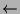
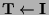
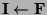
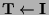
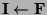

When negation is introduced, many of the convenient properties of the semantics of logic programs break down. Typically model intersection properties no longer hold, the immediate consequence operator is no longer monotonic and in the procedural semantics negation is associated with finite failure which is dependent on the computation rule.
The first and simplest approach to negation was to use the negation as failure rule for the operational semantics and Clark's completion for the declarative semantics [ClarkClark1978]. Here we adapt this approach to our three-valued scheme.
The completion  of a disjunctive normal program
of a disjunctive normal program  is the set of completions of clauses in
is the set of completions of clauses in  .
.
The completion of a clause
 is
, where the
is
, where the  are the local variables.
are the local variables.
The ``'' in completions is interpreted as ``if and only
if'', modulo inadmissible atoms, in the model theory (see below).
Clause instances of the form
 are
a source of incompleteness (a class of bugs called uncovered atoms
[ShapiroShapiro1983]) which can translate to unsoundness when negation as failure
is used. Clause instances of the form

can cause similar problems. Models of the completion therefore do
not include such clauses. Clause instances of the form
 and
are
a source of incompleteness (a class of bugs called uncovered atoms
[ShapiroShapiro1983]) which can translate to unsoundness when negation as failure
is used. Clause instances of the form

can cause similar problems. Models of the completion therefore do
not include such clauses. Clause instances of the form
 and
 do not
to cause problems for Prolog. Even alternative execution mechanisms
would not cause problems as long as the top level of the computation is
assumed to be admissible or any inadmissible instances can be ignored.
Due to the asymmetry with I we retain instead of
using
.
do not
to cause problems for Prolog. Even alternative execution mechanisms
would not cause problems as long as the top level of the computation is
assumed to be admissible or any inadmissible instances can be ignored.
Due to the asymmetry with I we retain instead of
using
.
One criticism of Clark's approach is that the completion may have no (two-valued) models. Adding a definition such as to a program results in everything being a logical consequence of the program but does not change the success set. Though we believe this criticism has been over-stated, it does not apply in the three-valued case. A three-valued model (and even strong model) always exists and an atom such as can be inadmissible, independent of the interpretation of the rest of the program.